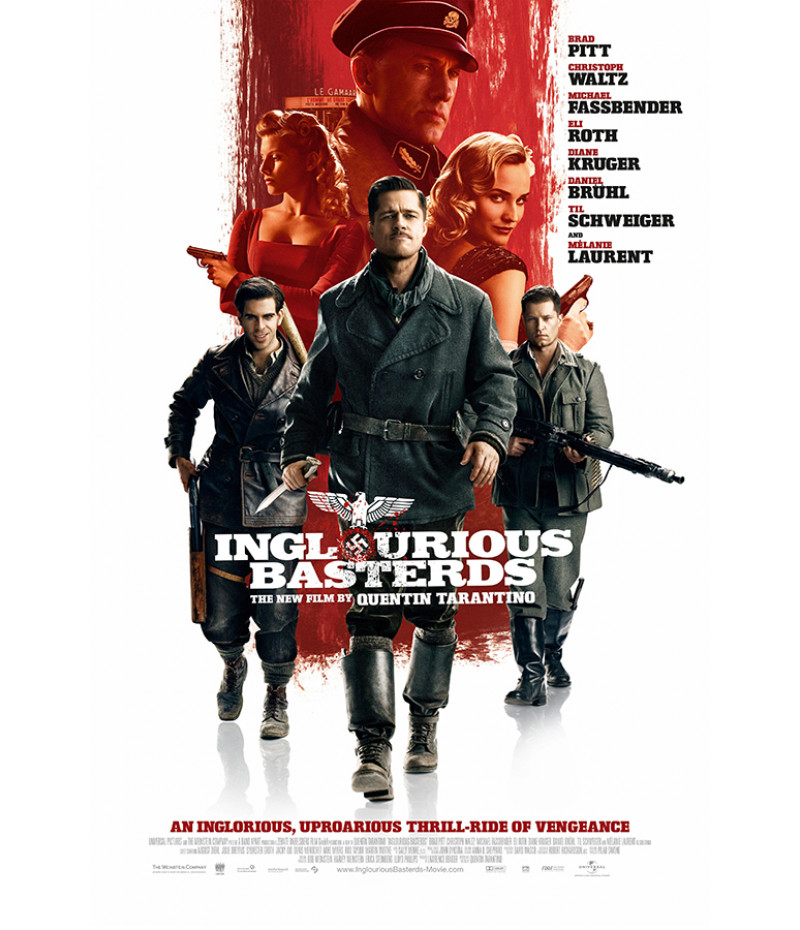
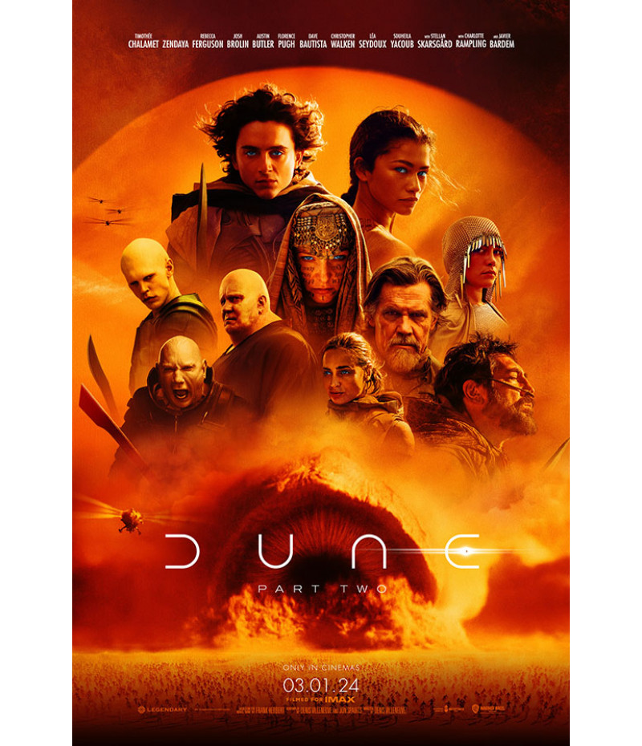
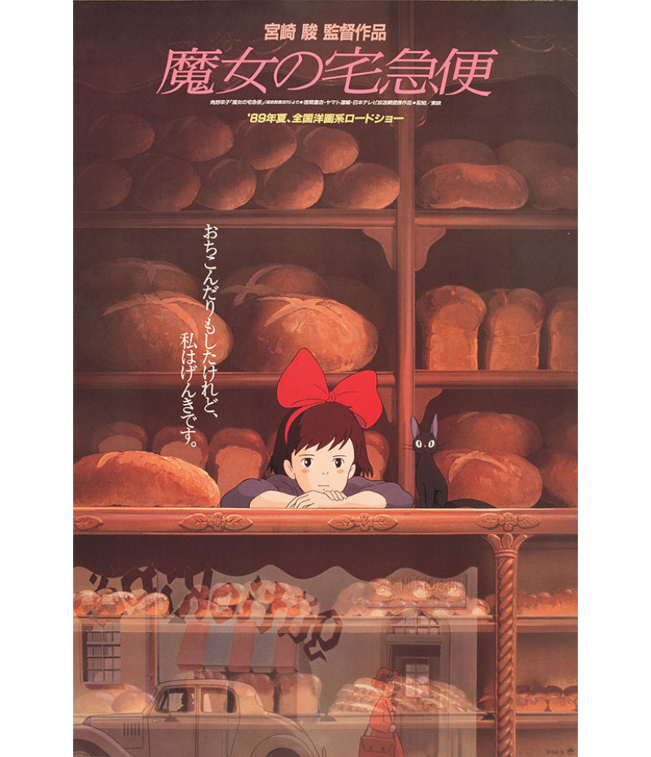
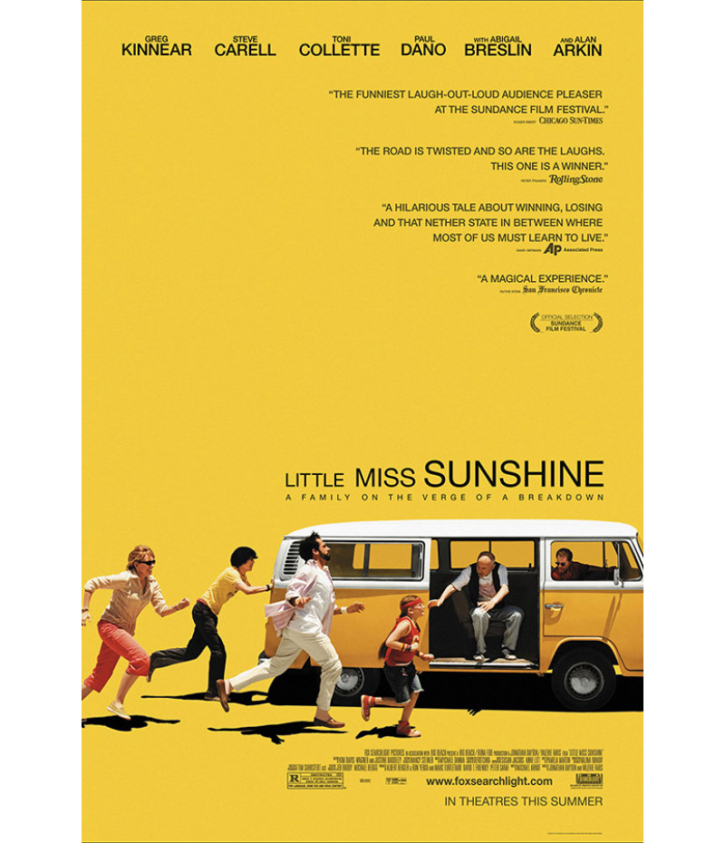
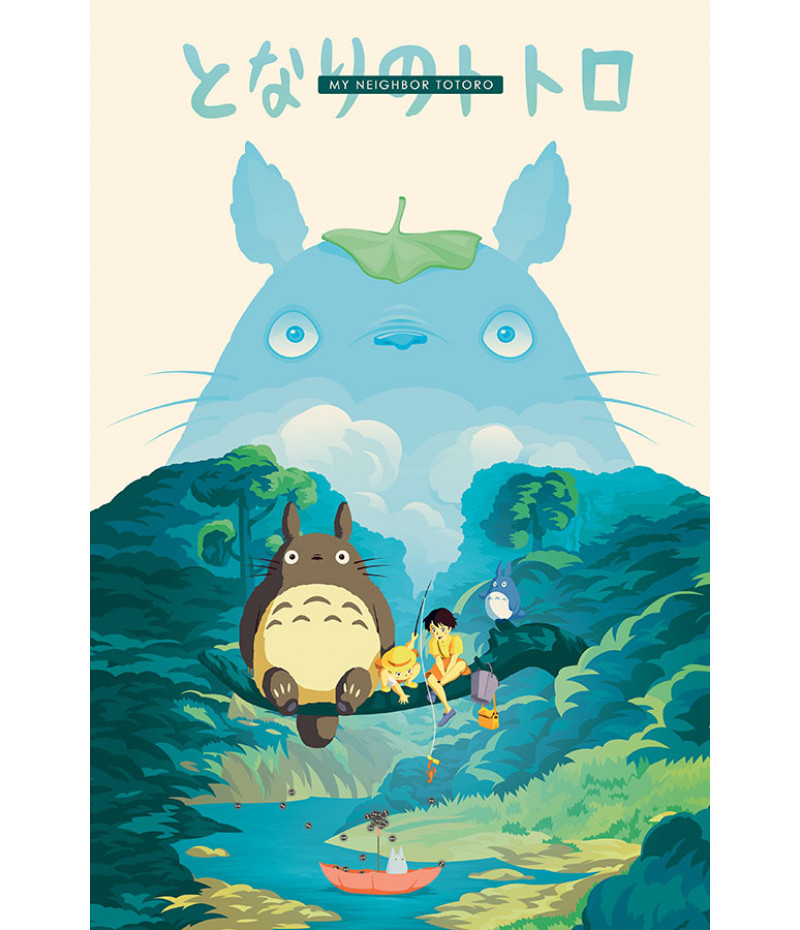

Sophie reflete sobre a alegria e a melancolia das férias que ela tirou com seu pai 20 anos antes.
Memórias reais e imaginárias preenchem as lacunas enquanto ela tenta reconciliar o pai que conheceu
com o homem que desconhecia.

Bastardos Inglórios
Durante a Segunda Guerra Mundial, na França, judeus americanos espalham o terror entre o terceiro
Reich. Ao mesmo tempo, Shosanna, uma judia que fugiu dos nazistas, planeja vingança quando um evento
em seu cinema reunirá os líderes do partido.

Dune
Paul Atreides se une a Chani e aos Fremen enquanto busca vingança contra os conspiradores que
destruíram sua família. Enfrentando uma escolha entre o amor de sua vida e o destino do universo,
ele deve evitar um futuro terrível que só ele pode prever.

O Serviço de Entregas da Kiki
Por ordem de sua mãe, Kiki parte para um aprendizado de um ano, acompanhada por seu gato preto. A um
comando de sua vassoura mágica, ela vai parar na charmosa cidadezinha de Moreoastal. Infelizmente,
os hotéis locais não aceitam bruxas e a polícia a flagra fazendo algumas travessuras.

Little Miss Sunshine
O sonho da pequena Olive é participar do concurso de Pequena Miss Sunshine. Para isso, ela embarca
em uma divertida e comovente viagem com o pai, o tio, o avô, o irmão e a mãe. A família precisa
correr contra o tempo para que Olive chegue no horário e possa fazer a apresentação criada pelo seu
avô.

Meu Amigo Totoro
As irmãs Satsuki e Mei se mudam para o campo para ficar mais perto do hospital onde sua mãe está
internada. Lá conhecem os Totoros, adoráveis criaturas místicas e alegres, que só podem ser vistas
pelas crianças. Com eles, as duas irmãs viverão mágicas aventuras no campo.